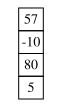
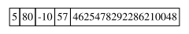
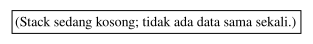
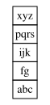
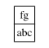

import numpy as np
import graphviz as gvModul 4 Struktur Data: Stack dan Queue
Stack dan Queue
Offline di Departemen Matematika
Kembali ke Struktur Data
Di praktikum kali ini tentang stack, kita akan membahas implementasi stack (baik dengan array maupun dengan linked list) serta contoh penggunaannya.
Implementasi dan contoh penggunaan stack
Implementasi stack dengan array
class ArrayStack:
def __init__(self, dtype, max):
self.dtype = dtype
self.max = max
self.array = np.empty(max, dtype=dtype)
self.top = -1
def get_size(self):
return self.top + 1
def get_capacity(self):
return self.max
def get_dtype(self):
return self.dtype
def is_empty(self):
if self.get_size() > 0:
return False
else:
return True
def is_full(self):
if self.get_size() >= self.get_capacity():
# if top+1 >= max
# atau sama saja, if top >= max-1
return True
else:
return False
def push(self, newdata):
if self.is_full():
print("Error push: stack sudah penuh.")
else:
self.top += 1
self.array[self.top] = newdata
def peek(self):
if self.is_empty():
print("Error peek: stack sedang kosong.")
return None
else:
return self.array[self.top]
def pop(self):
if self.is_empty():
print("Error pop: stack sudah kosong sebelumnya.")
return None
else:
output = self.array[self.top]
self.top -= 1
return output
def print_stack(self):
i = self.top
while i >= 0:
print(self.array[i])
i -= 1
# print array
def print_storage(self):
print(self.array)
def get_digraph_stack(self):
new_digraph = gv.Digraph()
# gambar akan terdiri dari satu tabel saja, satu kolom,
# dan tiap baris adalah tiap elemen di stack
tabel_besar = "<"
# pembuka tabel
tabel_besar += "<TABLE BORDER=\"0\" CELLBORDER=\"1\" CELLSPACING=\"0\">"
# menambahkan tiap elemen sebagai baris tersendiri
i = self.top
if i < 0:
tabel_besar += "<TR><TD>"
tabel_besar += "(Stack sedang kosong; tidak ada data sama sekali.)"
tabel_besar += "</TD></TR>"
while i >= 0:
tabel_besar += "<TR><TD>"
tabel_besar += str(self.array[i])
tabel_besar += "</TD></TR>"
i -= 1
# penutup tabel
tabel_besar += "</TABLE>"
tabel_besar += ">"
new_digraph.node("ArrayStack", shape="none", label=tabel_besar)
return new_digraph
def get_digraph_storage(self):
# menggambar array
new_digraph = gv.Digraph()
# pembuka tabel
tabel_besar = "<"
tabel_besar += "<TABLE BORDER=\"0\" CELLBORDER=\"1\" CELLSPACING=\"0\">"
# tabel hanya terdiri dari satu baris
tabel_besar += "<TR>"
# satu elemen per kolom
for i in range(self.get_capacity()):
tabel_besar += "<TD>"
tabel_besar += str(self.array[i])
tabel_besar += "</TD>"
# penutup baris
tabel_besar += "</TR>"
# penutup tabel
tabel_besar += "</TABLE>"
tabel_besar += ">"
new_digraph.node("array", shape="none", label=tabel_besar)
return new_digrapharraystack = ArrayStack(int, 5)
arraystack.push(5)
arraystack.push(80)
arraystack.push(100)arraystack.print_stack()100
80
5print(arraystack.get_capacity())5arraystack.print_storage()[ 5 80 100
4622241330054037504 4625478292286210048]print(arraystack.peek())100arraystack.print_stack()100
80
5nilai = arraystack.pop()
print(nilai)100arraystack.print_stack()80
5arraystack.print_storage()[ 5 80 100
4622241330054037504 4625478292286210048]arraystack.push(-10)
arraystack.push(57)arraystack.print_stack()57
-10
80
5arraystack.print_storage()[ 5 80 -10
57 4625478292286210048]graf1 = arraystack.get_digraph_stack()display(graf1)
graf2 = arraystack.get_digraph_storage()display(graf2)
arraystack.push(90)arraystack.push(46)Error push: stack sudah penuh.arraystack.print_storage()[ 5 80 -10 57 90]print(arraystack.pop())
print(arraystack.pop())
print(arraystack.pop())
print(arraystack.pop())
print(arraystack.pop())90
57
-10
80
5print(arraystack.pop())Error pop: stack sudah kosong sebelumnya.
Noneprint(arraystack.get_size())0arraystack.print_stack()arraystack.print_storage()[ 5 80 -10 57 90]display(arraystack.get_digraph_stack())
Implementasi stack dengan singly-inked list
class SLNode:
def __init__(self, data, next=None):
self.data = data
self.next = nextclass SLStack:
def __init__(self):
# "head" ganti nama jadi top
self.top = None
def is_empty(self):
if self.top == None:
return True
else:
return False
def push(self, newdata):
newnode = SLNode(newdata)
newnode.next = self.top
self.top = newnode
def peek(self):
if self.is_empty():
print("Error peek: stack sedang kosong.")
else:
return self.top.data
def pop(self):
if self.is_empty():
print("Error pop: stack sudah kosong sebelumnya.")
else:
output = self.top.data
temp = self.top
self.top = self.top.next
del temp
return output
def get_size(self):
temp = self.top
size = 0
while temp != None:
size += 1
temp = temp.next
return size
def print_stack(self):
temp = self.top
while temp != None:
print(temp.data)
temp = temp.next
# print linked list
def print_storage(self):
print("top -> ", end="")
temp = self.top
while temp != None:
print(temp.data, end=" -> ")
temp = temp.next
print("None")
def get_digraph_stack(self):
new_digraph = gv.Digraph()
# gambar akan terdiri dari satu tabel saja, satu kolom,
# dan tiap baris adalah tiap elemen di stack
tabel_besar = ""
tabel_besar += "<"
tabel_besar += "<TABLE BORDER=\"0\" CELLBORDER=\"1\" CELLSPACING=\"0\">"
temp = self.top
if temp == None:
tabel_besar += "<TR><TD>"
tabel_besar += "(Stack sedang kosong; tidak ada data sama sekali.)"
tabel_besar += "</TD></TR>"
while temp != None:
tabel_besar += "<TR><TD>"
tabel_besar += str(temp.data)
tabel_besar += "</TD></TR>"
temp = temp.next
# penutup tabel
tabel_besar += "</TABLE>"
tabel_besar += ">"
new_digraph.node("SLStack", shape="none", label=tabel_besar)
return new_digraph
# copas dari modul linked list, tapi head ganti jadi top
def get_digraph_storage(self):
# Buat digraph baru yang sifatnya dari kiri ke kanan
new_digraph = gv.Digraph(graph_attr={"rankdir": "LR"})
# Pointer untuk menunjuk ke tiap node, mulai dari node pertama
# (akan dilakukan traversal)
current = self.top
# Untuk menghitung node ke-sekian untuk nama node di Graphviz,
# sehingga top menunjuk ke node0, lalu node0 menunjuk ke node1, dst
counter = 0
# Memperoleh alamat yang sedang disimpan di top
# - asumsi awal: tidak ada alamat (None)
next_id = None
next_name = "node0" # ini nanti untuk nama node berikutnya di Graphviz
# - kalau ternyata ada alamat...
if current != None:
# maka simpan alamat tersebut
next_id = hex(id(current))
# kita buat lebih spesifik untuk node berikutnya, tunjuk ke port id
next_name = "node0:id"
# Label (tabel) untuk pointer top
# - pembuka tabel
str_label = "<"
str_label += "<TABLE BORDER=\"0\" CELLBORDER=\"1\" CELLSPACING=\"0\">"
# - baris top
str_label += "<TR><TD>top</TD></TR>"
# - baris alamat (sekalian membuat port namanya "contents")
str_label += "<TR><TD PORT=\"contents\">" + str(next_id) + "</TD></TR>"
# - penutup tabel
str_label += "</TABLE>"
str_label += ">"
# Membuat node top, membuat edge dari top ke node berikutnya
new_digraph.node("top", shape="none", label=str_label)
new_digraph.edge("top:contents", next_name)
# dari port "contents" ke node berikutnya, yang namanya next_name
# Selama node yang ditunjuk bukan None, buatlah node nya di Graphviz,
# lalu lanjut ke node selanjutnya (ini traversal)
while current != None:
# Alamat yang tersimpan pada current.next
# - asumsi awal: tidak ada alamat; current adalah node terakhir
next_id = None
# - kalau ternyata ada alamat...
if current.next != None:
# maka simpan alamat tersebut
next_id = hex(id(current.next))
# Persiapan label (tabel) untuk node
# - pembuka tabel
str_label = "<"
str_label += "<TABLE BORDER=\"0\" CELLBORDER=\"1\" CELLSPACING=\"0\">"
# - baris tulisan "data", "next"
str_label += "<TR><TD>data</TD><TD>next</TD></TR>"
# - baris untuk isi data dan isi next
str_label += "<TR>"
str_label += "<TD>" + str(current.data) + "</TD>"
str_label += "<TD PORT=\"next\">" + str(next_id) + "</TD>"
str_label += "</TR>"
# - baris tulisan "alamat node", merentang dua kolom
str_label += "<TR><TD COLSPAN=\"2\">alamat node</TD></TR>"
# - baris untuk isi alamat node, merentang dua kolom
str_label += "<TR>"
str_label += "<TD PORT=\"id\" COLSPAN=\"2\">"
str_label += str(hex(id(current)))
str_label += "</TD>"
str_label += "</TR>"
# - penutup tabel
str_label += "</TABLE>"
str_label += ">"
# Membuat node baru di Graphviz dengan label (tabel) tersebut
new_digraph.node("node" + str(counter), shape="none", label = str_label)
# Menentukan nama dua port yang bakal disambung dengan edge,
# yaitu (node saat ini):next disambung ke node(berikutnya):id
# yaitu bagian "next" disambung ke bagian alamat di node berikutnya
nama_node_next = "node" + str(counter) + ":next"
if current.next != None:
nama_alamat_node_berikutnya = "node" + str(counter+1) + ":id"
# atau ke node(berikutnya) saja tanpa id kalau itu ternyata None,
# karena None tidak akan memiliki port id
else:
nama_alamat_node_berikutnya = "node" + str(counter+1)
# Menyambung keduanya
new_digraph.edge(nama_node_next, nama_alamat_node_berikutnya)
# Lanjut ke node selanjutnya
current = current.next
counter += 1
# Kalau sudah keluar loop, artinya current menunjuk ke None
# Berarti tinggal membuat "node" terakhir berisi tulisan None
# (karena sambungannya sudah dibuat di dalam loop, tinggal node nya)
new_digraph.node("node" + str(counter), shape="none", label="None")
# Digraph sudah jadi
return new_digraphslstack = SLStack()
slstack.print_storage()top -> Noneslstack.push("abc")
slstack.push("fg")
slstack.push("ijk")
slstack.push("pqrs")
slstack.push("xyz")slstack.print_stack()xyz
pqrs
ijk
fg
abcslstack.print_storage()top -> xyz -> pqrs -> ijk -> fg -> abc -> Nonedisplay(slstack.get_digraph_stack())
print(slstack.pop())
print(slstack.pop())
print(slstack.pop())xyz
pqrs
ijkslstack.print_stack()fg
abcslstack.print_storage()top -> fg -> abc -> Nonedisplay(slstack.get_digraph_stack())
Contoh sederhana: reverse suatu list/array
Queue Linear
Implementasi Queue dengan Array
Implementasi Queue dengan Linked List
# definisikan node dari suatu linked list
class SLNode:
def __init__(self, data, next=None):
self.data = data
self.next = nextclass SLLinQueue:
# definisikan queue dengan linked list
def __init__(self):
# head=front, tail=rear
self.front = None
self.rear = None
# cek apakah queue kosong
def is_empty(self):
if self.front == None:
return True
else:
return False
# mengetahui banyaknya elemen pada queue
def get_size(self):
size = 0
temp = self.front
while (temp != None):
size += 1
temp = temp.next
return size
# insert di akhir linked list
def enqueue(self, newdata):
newnode = SLNode(newdata)
# kasus saat queue kosong
if self.is_empty():
self.front = newnode
self.rear = newnode
# kasus saat queue tidak kosong
else:
self.rear.next = newnode
self.rear = newnode
# mengintip isi dari queue di awal
def peek(self):
# kasus saat queue kosong
if self.is_empty():
print("Error peek: queue sedang kosong")
return None
# kasus saat queue tidak kosong
else:
return self.front.data
# hapus di awal linked list
def dequeue(self):
# kasus saat queue kosong
if self.is_empty():
print("Error dequeue: queue sudah kosong")
return None
# kasus saat queue tidak kosong
else:
output = self.front.data
temp = self.front
self.front = self.front.next
del temp # hapus node yang tidak penting
return output
# cetak queue yang dimiliki
def print_queue(self):
print("front : ", end="")
# kasus saat queue kosong
if self.is_empty():
print("(tidak ada data) : rear")
# kasus queue tidak kosong
else:
temp = self.front
while temp != None:
if temp.next != None:
print(temp.data, end = " | ")
else:
print(temp.data, end="")
temp = temp.next
print(" : rear")
# cetak queue yang dimiliki *versi lain
def print_storage(self):
print("front -> ", end="")
# kasus saat queue kosong
if self.is_empty():
print("None <- rear")
# kasus queue tidak kosong
else:
temp = self.front
while temp != None:
if temp.next != None:
print(temp.data, end = " -> ")
else:
print(temp.data, end = " <- ")
temp = temp.next
print("rear")Contoh Penggunaan Queue dengan Linked List
queueLinLinked = SLLinQueue()queueLinLinked.print_queue()front : (tidak ada data) : rearqueueLinLinked.enqueue(1)
queueLinLinked.print_queue()front : 1 : rearfor i in range(3):
queueLinLinked.enqueue(i*5)
queueLinLinked.print_queue()front : 1 | 0 | 5 | 10 : rearqueueLinLinked.print_storage()front -> 1 -> 0 -> 5 -> 10 <- rearqueueLinLinked.get_size()4queueLinLinked.dequeue()
queueLinLinked.print_storage()front -> 0 -> 5 -> 10 <- rearfor i in range(queueLinLinked.get_size()):
queueLinLinked.dequeue()
queueLinLinked.print_storage()front -> None <- rearqueueLinLinked.dequeue()Error dequeue: queue sudah kosongdef reverse_array_arraystack(array_old):
array = array_old.copy()
# memeriksa tipe data dari elemen pertama
tipe_data = type(array[0])
# khusus array, bisa juga menggunakan array.dtype
arraystack = ArrayStack(tipe_data, len(array))
for i in range(len(array)):
arraystack.push(array[i])
for i in range(len(array)):
array[i] = arraystack.pop()
return arraylist1 = ["m", "a", "t", "e", "k"]
list2 = reverse_array_arraystack(list1)
print(list2)['k', 'e', 't', 'a', 'm']def reverse_array_slstack(array_old):
array = array_old.copy()
slstack = SLStack()
for i in range(len(array)):
slstack.push(array[i])
for i in range(len(array)):
array[i] = slstack.pop()
return arrayarray1 = np.array(["m", "a", "t", "e", "k"])
array2 = reverse_array_slstack(array1)
print(array2)['k' 'e' 't' 'a' 'm']class ArrayLinQueue:
# definisikan queue dengan array
def __init__(self, dtype, array_max):
self.dtype = dtype
self.array_max = array_max
self.array = np.empty(array_max, dtype = dtype)
self.front = -1
self.rear = -1
# mengetahui banyaknya elemen pada queue
def get_size(self):
# kasus saat queue kosong
if self.is_empty():
return 0
# kasus queue tidak kosong
else:
size = (self.rear - self.front) + 1
return size
# mengetahui kapasitas sesungguhnya dari queue
def get_capacity_array(self):
return self.array_max
# mengetahui kapasitas yang tersisa dari queue
def get_capacity_queue(self):
# kasus saat queue belum digunakan
if self.front == -1:
capacity_queue = self.array_max
# kasus saat queue sudah digunakan
else:
capacity_queue = self.array_max - self.rear - 1 #perlu debugging ketika sudah full
return capacity_queue
# cek apakah queue kosong
def is_empty(self):
if self.front == -1:
return True
else:
return False
# cek apakah queue sudah penuh
def is_full(self):
if self.rear == self.array_max - 1:
return True
else:
return False
# metode enqueue
def enqueue(self, newdata):
# Kondisi ketika array penuh
if self.is_full():
print("Error enqueue: queue sudah memenuhi batas maksimum")
# Kasus ketika queue masih kosong di awal
elif self.front == -1:
self.front += 1
self.rear += 1
self.array[self.rear] = newdata
# kasus ketika queue sudah tidak kosong di awal
else:
self.rear += 1
self.array[self.rear] = newdata
# mengintip isi dari queue di awal
def peek(self):
if self.is_empty():
print("Error peek: queue sedang kosong")
else:
return self.array[self.front]
# metode dequeue
def dequeue(self):
# kasus saat queue kosong
if self.is_empty():
print("Error dequeue: queue sudah kosong sebelumnya")
return None
# kasus hanya satu elemen pada queue
elif (self.get_size() == 1):
# Jika di queue hanya ada satu elemen, dan ingin di-dequeue,
# maka queue akan kosong setelah itu
# kita reset queue kita jadi kosong
output = self.array[self.front]
self.front = -1
self.rear = -1
return output
# kasus umum pada queue
else:
output = self.array[self.front]
self.front += 1
return output
# mencetak semua elemen pada queue
def print_storage(self):
print(self.array)
def display(self):
return self.array
# mencetak queue *versi lain
def print_queue(self):
print("front : ", end="")
if self.is_empty():
print("(tidak ada data) : rear")
else:
for i in range(self.front, self.rear): # i = front, ..., rear-1
print(self.array[i], end=" | ")
print(self.array[self.rear], end="") # untuk i = rear
print(" : rear")Contoh penggunaan Queue dengan Array
queueLinArray = ArrayLinQueue(dtype = int, array_max=10)queueLinArray.get_capacity_array()10queueLinArray.print_queue()front : (tidak ada data) : rearqueueLinArray.enqueue(1)
queueLinArray.print_queue()front : 1 : rearfor i in range(3):
queueLinArray.enqueue(i*5)
queueLinArray.print_queue()front : 1 | 0 | 5 | 10 : rearqueueLinArray.print_storage()[ 1 0 5
10 7599578574504329216 3761739758475294518
3617566120052078381 3256163233075901495 4050536193999398197
8026364514949935924]print(f"Banyaknya elemen pada queue: {queueLinArray.get_size()}")
print(f"Kapasitas yang tersedia: {queueLinArray.get_capacity_queue()}")Banyaknya elemen pada queue: 4
Kapasitas yang tersedia: 6queueLinArray.dequeue()1print(f"Banyaknya elemen pada queue: {queueLinArray.get_size()}")
print(f"Kapasitas yang tersedia: {queueLinArray.get_capacity_queue()}")
queueLinArray.print_queue()Banyaknya elemen pada queue: 3
Kapasitas yang tersedia: 6
front : 0 | 5 | 10 : rearfor i in range(queueLinArray.get_size()):
queueLinArray.dequeue()queueLinArray.dequeue()Error dequeue: queue sudah kosong sebelumnyaCircular Queue
Masalah utama dalam linear queue dengan array adalah saat melakukan enqueue dan dequeue, kedua pointer hanya akan berjalan ke kanan. Artinya ketika pointer depan telah sampai ke indeks terakhir di array, program akan menganggap queue telah penuh, meskipun elemen di indeks awal array sudah di dequeue.
Untuk mengatasi hal ini, kita dapat membuat pointer depan kembali ke awal jika pointer tersebut telah melewati indeks terakhir dari array dan lanjut mengisi queue mulai dari indeks pertama hingga pointer depan bertemu dengan pointer belakang. Implementasi queue seperti ini disebut circular queue.
Implementasi Circular Queue dengan Array
# mulai dari sini, untuk memudahkan circular queue
# akan disebut sebagai queue saja
class ArrayCircQueue:
# definisikan queue dengan array
def __init__(self, dtype, max):
self.dtype = dtype
self.max = max
self.array = np.empty(max, dtype=dtype)
self.front = -1
self.rear = -1
# cek apakah queue kosong
def is_empty(self):
if self.front == -1:
return True
else:
return False
# cek apakah queue penuh
def is_full(self):
# kasus saat rear modulo max sama dengan front
# dapat dibayangkan sebagai rear tepat di belakang front
# pada diagram array lingkaran
if self.front == (self.rear + 1) % self.max:
return True
else:
return False
# mengetahui banyaknya elemen pada queue
def get_size(self):
# kasus saat kosong
if self.is_empty():
size = 0
# kasus front di belakang rear
elif self.front <= self.rear:
size = (self.rear - self.front) + 1
# kasus rear di belakang front
else:
size = self.max - (self.front - self.rear - 1)
return size
# mengetahui kapasitas queue
def get_capacity(self):
return self.max
# metode enqueue
def enqueue(self, newdata):
# kasus queue penuh
if self.is_full():
print("Error enqueue: queue sudah penuh sebelumnya")
# kasus queue kosong
elif self.front == -1:
self.front += 1
self.rear += 1
self.array[self.rear] = newdata
# kasus ketika queue sudah tidak kosong
else:
self.rear = (self.rear + 1) % self.max # hanya berbeda di sini
self.array[self.rear] = newdata
# mengintip isi dari queue di awal
def peek(self):
if self.is_empty():
print("Error peek: queue sedang kosong")
else:
return self.array[self.front]
# mnetode dequeue
def dequeue(self):
# kasus ketika queue kosong
if self.is_empty():
print("Error dequeue: queue sudah kosong sebelumnya")
return None
# kasus hanya satu elemen pada queue
elif (self.get_size() == 1):
# Jika di queue hanya ada satu elemen, dan ingin di-dequeue,
# maka queue akan kosong setelah itu
output = self.array[self.front]
self.front = -1
self.rear = -1
return output
# kasus umum pada queue
else:
output = self.array[self.front]
self.front = (self.front + 1) % self.max # hanya berbeda di sini
return output
# mencetak semua elemen pada queue
def print_storage(self):
print(self.array)
# mencetak semua elemen pada queue *versi lain
def print_queue(self):
print("front : ", end="")
# kasus saat queue kosong
if self.is_empty():
print("(tidak ada data) : rear")
# kasus saat queue tidak kosong
else:
# i = front, ..., rear-1 (kurang lebih begitu)
i = self.front
while i != self.rear:
print(self.array[i], end=" | ")
i = (i + 1) % self.max
# untuk i = rear
print(self.array[self.rear], end="")
print(" : rear")queueCircArray = ArrayCircQueue(dtype = int, max = 9)queueCircArray.print_queue()front : (tidak ada data) : rearqueueCircArray.print_storage()[102469711431981 0 0 0
0 0 0 0
0]queueCircArray.enqueue(65)
queueCircArray.enqueue(-11)
queueCircArray.enqueue(43)queueCircArray.print_storage()[ 65 -11 43 0 0 0 0 0 0]queueCircArray.print_queue()front : 65 | -11 | 43 : rearprint(queueCircArray.front)
print(queueCircArray.rear)0
2for i in range(6):
queueCircArray.enqueue(i*4 + 1)
queueCircArray.print_storage()[ 65 -11 43 1 5 9 13 17 21]queueCircArray.enqueue(41)Error enqueue: queue sudah penuh sebelumnyaqueueCircArray.dequeue()65queueCircArray.print_storage()
queueCircArray.print_queue()[ 65 -11 43 1 5 9 13 17 21]
front : -11 | 43 | 1 | 5 | 9 | 13 | 17 | 21 : rearqueueCircArray.enqueue(9)
queueCircArray.print_storage()
queueCircArray.print_queue()[ 9 -11 43 1 5 9 13 17 21]
front : -11 | 43 | 1 | 5 | 9 | 13 | 17 | 21 | 9 : rearprint(queueCircArray.front)
print(queueCircArray.rear)1
0for i in range(3):
queueCircArray.dequeue()queueCircArray.print_storage()
queueCircArray.print_queue()[ 9 -11 43 1 5 9 13 17 21]
front : 5 | 9 | 13 | 17 | 21 | 9 : rearprint(queueCircArray.front)
print(queueCircArray.rear)4
0Implementasi Circular Queue dengan Linked List
class SLNode:
def __init__(self, data, next=None):
self.data = data
self.next = nextclass SLCircQueue:
# definisikan queue dengan linked list
def __init__(self):
# head=front, tail=rear
self.front = None
self.rear = None
# cek apakah queue kosong
def is_empty(self):
if self.front == None:
return True
else:
return False
# mengetahui banyaknya elemen pada queue
def get_size(self):
size = 0
temp = self.front
# kasus saat queue kosong
if temp == None:
return size
# kasus linked list tidak kosong
else:
size += 1
temp = temp.next
while (temp != self.front):
size += 1
temp = temp.next
# alasan pemisahan adalah sebagai penanda kapan traversal
# perlu dihentikan
return size
# metode enqueue
def enqueue(self, newdata):
newnode = SLNode(newdata)
# kasus saat queue kosong
if self.is_empty():
self.front = newnode
self.rear = newnode
newnode.next = newnode
# kasus queue tidak kosong
else:
self.rear.next = newnode
self.rear = newnode
newnode.next = self.front
# masih sama persis
def peek(self):
if self.is_empty():
print("Error peek: queue sedang kosong")
return None
else:
return self.front.data
def dequeue(self):
if self.is_empty():
print("Error dequeue: queue sudah kosong sebelumnya")
return None
elif (self.front == self.rear): # sama saja self.get_size() == 1
output = self.front.data
del self.front
self.front = None
self.rear = None
return output
else:
output = self.front.data
temp = self.front
self.front = self.front.next
del temp
self.rear.next = self.front
return output
def print_queue(self):
print("front : ", end="")
if self.is_empty():
print("(tidak ada data) : rear")
else:
temp = self.front
while temp.next != self.front:
print(temp.data, end = " | ")
temp = temp.next
print(temp.data, end="")
print(" : rear")
def print_storage(self):
print("front -> ", end="")
if self.is_empty():
print("None (<- rear)")
else:
temp = self.front
while temp.next != self.front:
print(temp.data, end = " -> ")
temp = temp.next
print(temp.data, end = "")
print(" (<- rear) -> front")queueDLinked = SLCircQueue()queueDLinked.print_queue()front : (tidak ada data) : rearqueueDLinked.print_storage()front -> None (<- rear)queueDLinked.enqueue(65)
queueDLinked.enqueue(-11)
queueDLinked.enqueue(43)queueDLinked.print_queue()
queueDLinked.print_storage()front : 65 | -11 | 43 : rear
front -> 65 -> -11 -> 43 (<- rear) -> frontqueueDLinked.is_empty()FalsequeueDLinked.dequeue()65queueDLinked.print_queue()
queueDLinked.print_storage()front : -11 | 43 : rear
front -> -11 -> 43 (<- rear) -> frontqueueDLinked.peek()-11for i in range(queueDLinked.get_size()):
queueDLinked.dequeue()
queueDLinked.is_empty()True